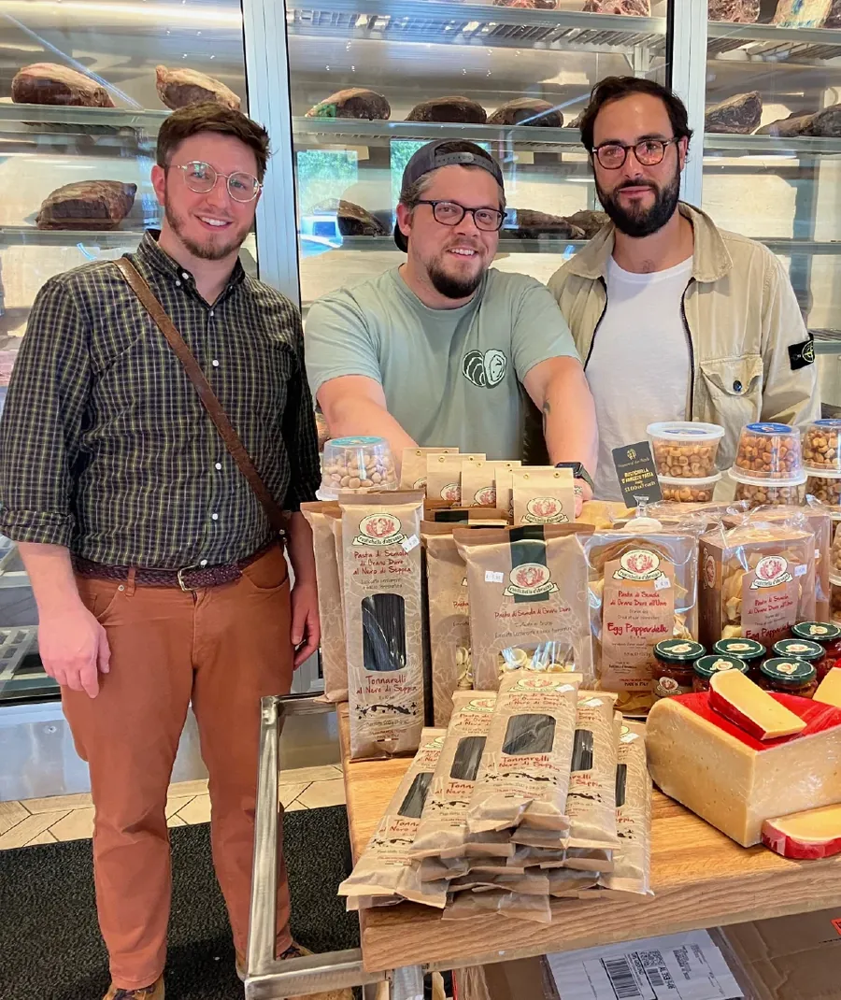
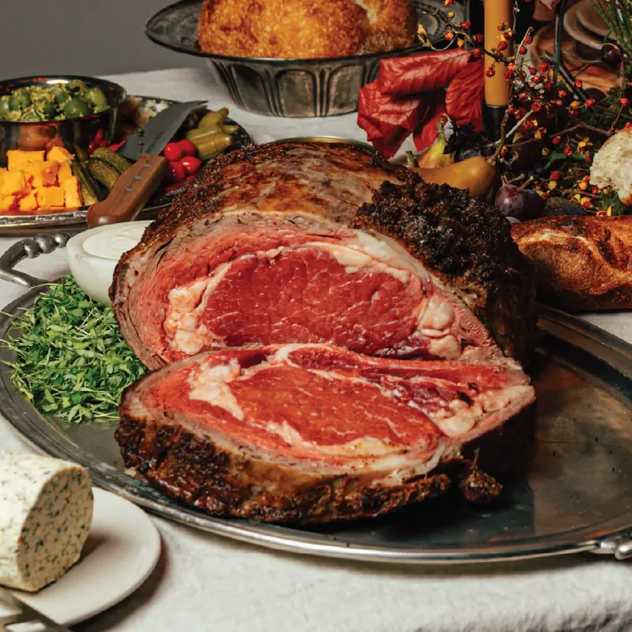
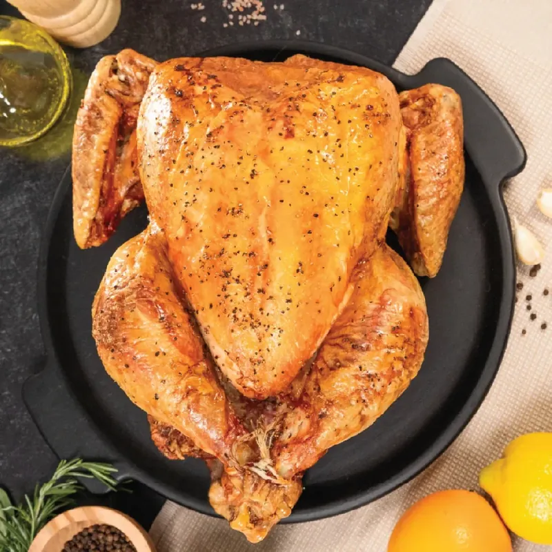
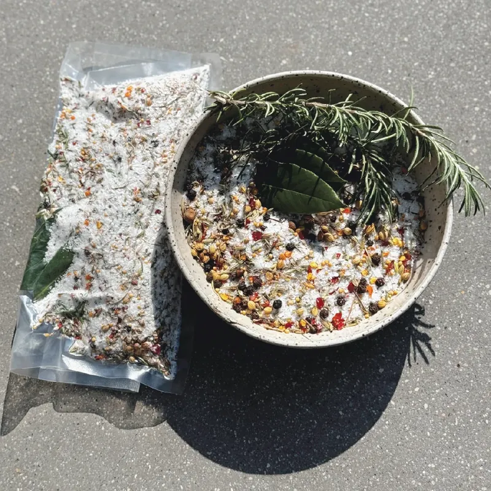
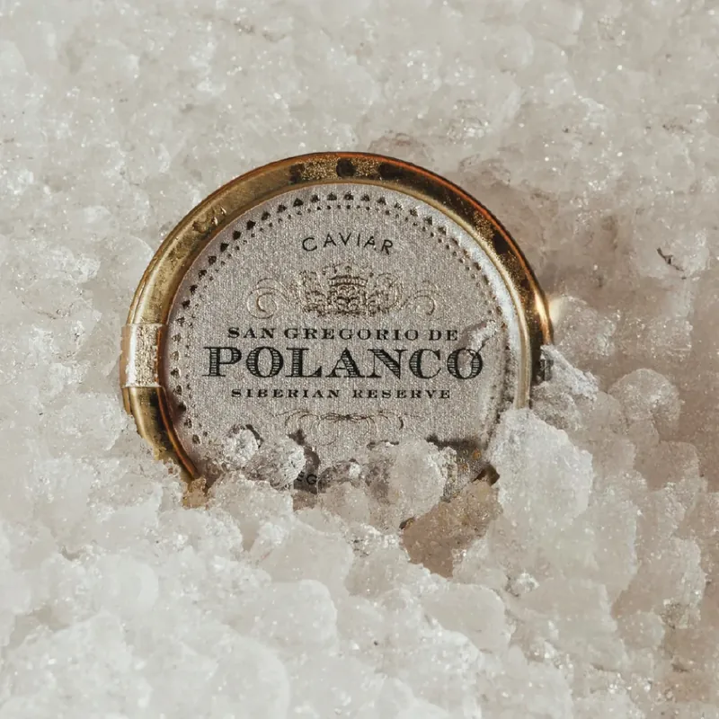
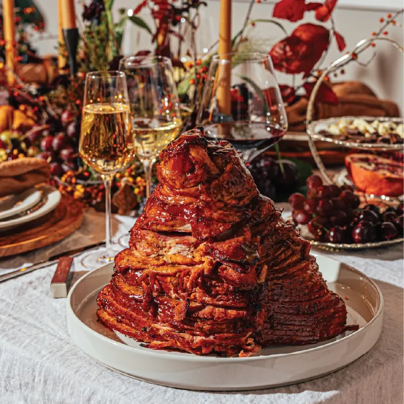
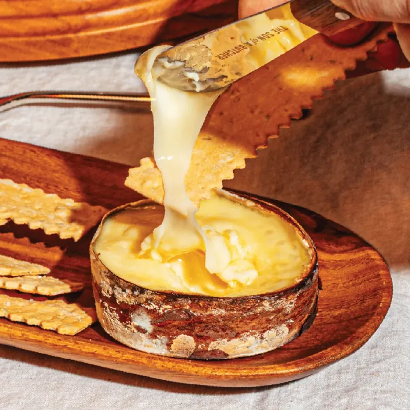

Home / Journal
The Journal.
News from the shop, notes from the counter, and the press that’s been kind enough to stop by.

Birmingham butcher shop named best in Alabama
Bham Now on Tasting Table’s pick, and how the shop grew out of Evans Meats.
Homegrown Alabama butcher shop named as best in state for high quality, family values
Founded by brothers Addam, Chase and Hunter Evans, the shop is one of 50 named by Tasting Table.
The Best Butcher Shop in Every State
Alabama: The Son of a Butcher, praised for knowing the ranchers, fishermen and cheesemakers behind every product.
Relationships Come First at Son of a Butcher
Carrie Rollwagen talks with Brian McMillan and head cheesemonger John Litzinger.

The Delmonico: the steakhouse legend hiding in the chuck
Once the gold standard of American steakhouses, now one of the best values in our case. Here’s what we cut, and why.
This Historic Steak Was Once the Gold Standard of Steakhouses — and Now It’s a Bargain
Why our Delmonico, cut from the top of the chuck roll, is one of the best values in the case.
Carving a legacy: the story of The Son of a Butcher
From Evans Meats to a Saturday-morning fixture around the corner from The Market at Pepper Place.

How a warehouse full of steaks became a butcher shop
In March 2020 our restaurant sales dropped seventy percent in a week. This is what we did next.

Trucks to the Gulf, several times a week
Fresh fish is a business built on trust. Here’s how our fish case gets filled.
The Son of a Butcher now open in Pepper Place
Evans Meats opens its first retail location, an old-world butcher shop built around the customer.
The Son of a Butcher shop opens in Pepper Place
A supplier to chefs like Frank Stitt and Chris Hastings opens a retail shop downtown.

GuideStanding rib roasts
Serving sizes, seasoning and cooking technique for prime rib.

RecipeThe perfect holiday turkey
Joyce Farms’ perfected recipe for their heritage bird.

VideoHow to brine a turkey
Our butchers walk through the brine kit, start to finish.

ReadPolanco caviar
Flavor, size, color and consistency: what we look for in a tin.

VideoCarving a spiral ham
Tips from Nueske’s on preparing and carving your ham.

TutorialServing Ebenezer
Turn a cold wheel into the most prized hors d’oeuvre in the room.
Gift Cards
For your favorite home cook.
Digital gift cards for the cook in your life.
Buy a gift cardThe Newsletter
Get the journal in your inbox.
Exclusive recipes, featured products and first word on upcoming events.
Join the list